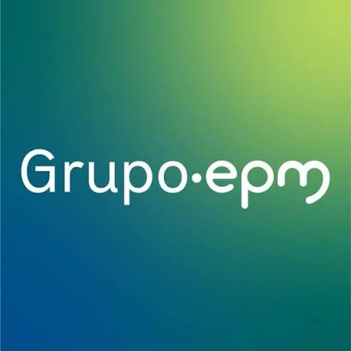
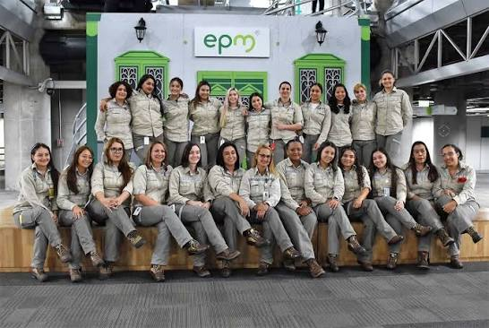

Una empresa de servicios públicos
Empresas Públicas de Medellín (EPM) es una empresa industrial y comercial del Estado, propiedad del Distrito de Medellín. Presta servicios públicos domiciliarios de energía eléctrica, gas por red, agua y saneamiento.
La compañía conecta estos servicios con la vida cotidiana de hogares y comunidades. Su gestión declara un enfoque en la responsabilidad social y ambiental y en la sostenibilidad de sus operaciones.
Fuente: EPM — Quiénes somos.

Presencia y servicios
EPM inició sus actividades en Medellín en 1955. Hoy presta servicios en Antioquia y en otros lugares del país, con actividades que también se extienden a otros países de América Latina.
Fuente: EPM — Quiénes somos.
